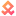
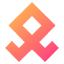
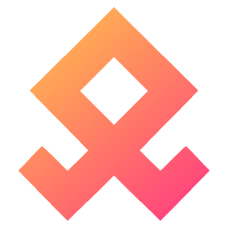
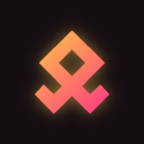

Light background — theme-aware SVG (switches via prefers-color-scheme)

Sibling of the DadChat mark: same Othala geometry, different hue — so a browser tab running Utterly never gets mistaken for a tab running DadChat.




Sibling of the DadChat mark: same Othala geometry, different hue — so a browser tab running Utterly never gets mistaken for a tab running DadChat.